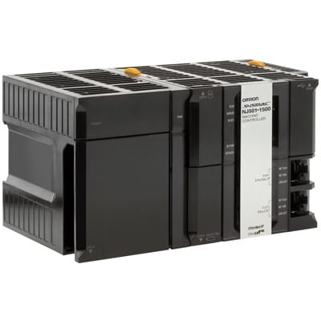

Machine Automation Controller NJ Series NJ Robotics CPU Unit: NJ501 4310

NJ Series tersebut merupakan teknologi kontrol robot menambah fleksibilitas proses pembuatan:
mesin yang dapat dikonfigurasi ulang dan pergantian cepat. Dimana kontroller tersebut berisi berbagai keuntungan sebagai berikut.
Fungsionalitas kontrol paralel, Cartesian dan robot seri
Meningkatkan kecepatan dan presisi kontrol
Mengurangi waktu pengembangan
Meminimalkan footprint dan maksimalkan efisiensi
The NJ Robotics controller mengintegrasikan mesin pembawa fleksibilitas baru untuk membangun kontrol
mesin dan kontrol robot, membangun robot yang dipandu visi dalam 5 langkah. Dimana kontroller tersebut berisi berbagai keuntungan sebagai berikut.
NJ Robotics controller berada di jantung sistem
Verifikasi awal yang efisien dengan simulasi terintegrasi
Pemrograman berskala dan mudah untuk semua jenis robot
Pengaturan dan penyetelan multi-axis
Membuat pemrograman mesin Pick & Place lebih mudah.
Spesifikasi NJ501 4310:
Kapasitas I/O: 2560 point atau 40 unit atau 3 rak ekspansi
Kapasitas program: 20 MB
Kapasitas memori variabel: 2 MB (dipertahankan selama kekuasaan gangguan) dan 4 MB (tidak dipertahankan selama kekuasaan gangguan)
Nomor gerakan axis: 16
Nomor robot yang dikontrol: 1
Komsumsi arus: 1.9 A pada 5VDC
Standar: UC1, N, L, CE, RCM, KC